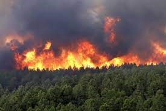

Aquecimento Global
O Aquecimento Global é um tema de grande importância na atualidade, trazendo grandes impactos ao nosso Planeta. Consiste no aumento de temperatura da atmosfera da Terra e consequentemente de nossos oceanos, originados principalmente pela evolução da indústria, crescimento da população, crescimento econômico, devastação desenfreada com a exploração e extração de minérios, desmatamento e o excessivo consumo de combustíveis fósseis. O Órgão responsável pela divulgação e informações através de dados sobre o Aquecimento Global é o Painel Internacional sobre Mudanças Climáticas (IPCC), órgão ligado a Organização das Nações Unidas (ONU). O IPCC através de seus estudos e mapeamento de dados, conclui que se medidas de contenção para o avanço do aquecimento global não forem tomadas com controle rigoroso, até 2100 o planeta aumentará a sua temperatura de 1,8º a 4ºC, sendo que se houver o controle mundial para emissão de gases e outros fatores, o Planeta deve aquecer somente 1ºC. O principal e mais atual acordo para contenção do aquecimento Global é o Acordo de Paris, que integram 196 países, inclusive o Brasil, com ações para substituição de geração de energia fosseis, para energia limpa sem poluentes entre outros. Estudos realizados considerando os últimos 50 anos, mostram que é improvável que o aquecimento possa ter sido causado por causas naturais, relatando que possivelmente, teria resfriado o planeta. O mundo contemporâneo mostra que mudanças importantes foram conduzidas pelo Homem, com o avanço demográfico da população, industrialização de produtos que para sua fabricação, geram gases poluentes, utilização desenfreada de aerossol, o aumento frenético de automóveis e aviões em todo o planeta, o desmatamento sem precedentes principalmente em nossa Amazônia, que impactam também no clima de outros continentes.
Efeito Estufa - O Principal Culpado
O efeito estufa é um dos principais causadores do aquecimento global e consiste na retenção de calor pela atmosfera impedindo que se dissipe no Espaço. Esse fenômeno ocorre porque a origem do calor, provem do Sol, que emite grandes quantidades de luz visível e radiação térmica que denominamos de calor. Cerca de um terço da radiação recebida na Terra pelo Sol é refletida para o espaço, o problema é que dois terços são absorvidas pelos continentes e oceanos e devido ao efeito estufa abafando o Planeta, a radiação não se dissipa para o espaço, ficando retida, ocasionando o aquecimento. O aumento das temperaturas Globais, através do efeito estufa, que é fenômeno natural responsável por manter o calor na superfície terrestre, mas que estaria sendo intensificado de forma a causar prejuízo com a emissão dos gases-estufa que impactam de forma significativa os ciclos naturais da Terra, aumentando o nível dos mares assim como a sua temperatura, mudanças na corrente marinha, alteração nas estações do ano, derretimento de geleiras, regimes de chuvas irregulares, enchentes, secas, alteração da fauna e de ecossistemas. O aquecimento estudado no planeta, ele não é globalmente uniforme, registros indicam que o Ártico teve aumento de temperatura diferente e maior nos últimos sessenta anos em comparação com os demais continentes.